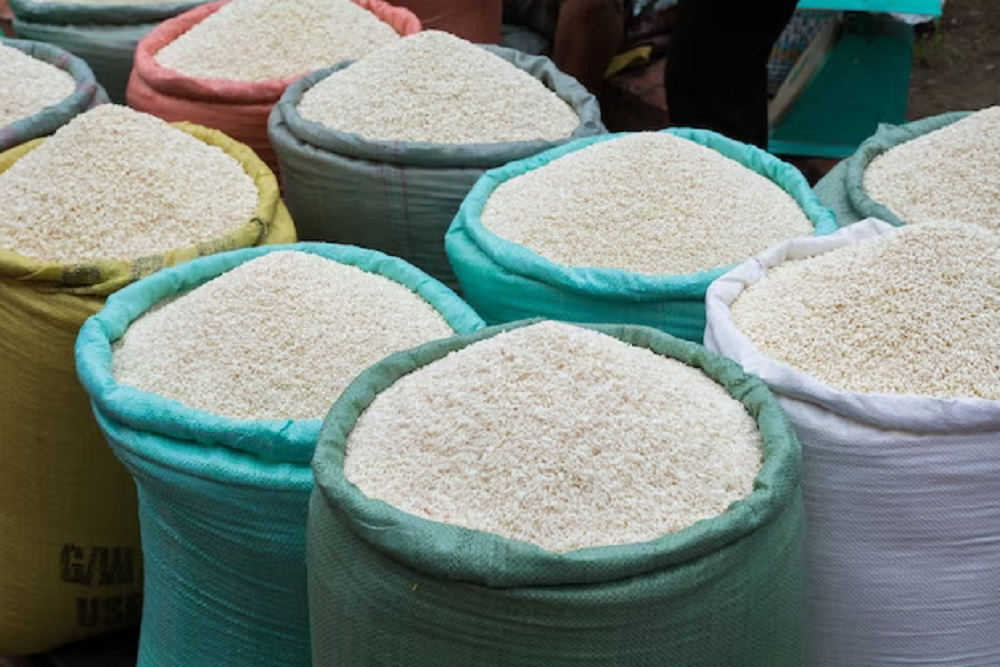
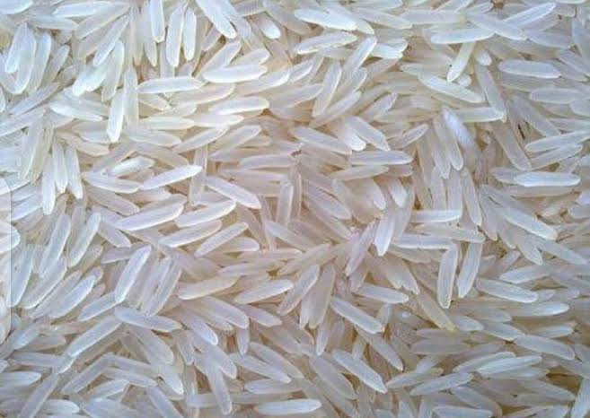
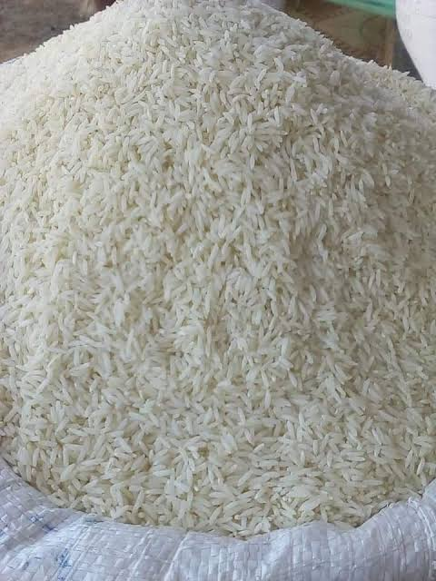

Rice Suppliers in Tanzania | Fournisseurs de riz
Looking for rice suppliers in Tanzania for wholesale business in the Democratic Republic of Congo (DRC)? Kigoma–Congo Business Link facilitates business connections between wholesale buyers and potential Tanzanian rice suppliers.



Wholesale Rice from Tanzania
Tanzania is an important source of agricultural products for regional trade. Buyers interested in Tanzanian rice can explore available supplier offers and compare them according to quantity, quality, price, packaging and commercial terms.
Kigoma–Congo Business Link helps buyers identify potential suppliers and compare offers based on:
- Required quantity and order size.
- Rice variety, quality and grain specifications.
- Packaging and bag sizes.
- Supplier prices and payment conditions.
- Collection location and transport arrangements.
Rice Buyers in DR Congo
We welcome wholesale enquiries from importers, distributors, shops and traders in Kalemie, Baraka, Uvira, Bukavu, Goma, Butembo and other markets across the Democratic Republic of Congo.
Buyers can share their requirements to explore suitable supplier offers from Tanzania and possible transport options for their destinations.
Business and Trade Locations
- Kigoma, Tanzania
- Dar es Salaam, Tanzania
- Other rice-producing and trading areas in Tanzania, depending on supplier availability
- Kalemie, DR Congo
- Uvira, Baraka, Bukavu, Goma and other DRC destinations
How Our Rice Business Connection Works
- Tell us the quantity of rice you need.
- Specify your destination and preferred rice quality.
- Share your packaging and other requirements.
- We identify potential suppliers and compare available offers.
- We facilitate communication and help assess transport options.
Rice Transport and Logistics
Transport arrangements depend on the supplier's location, quantity, packaging, destination and available cargo services. Buyers can request assistance in exploring possible transport routes from Tanzania to Kalemie, Uvira and other destinations in DR Congo.
Fournisseurs de riz en Tanzanie
Vous recherchez des fournisseurs de riz en Tanzanie pour votre commerce de gros en République Démocratique du Congo (RDC) ? Kigoma–Congo Business Link facilite la mise en relation entre les acheteurs et les fournisseurs potentiels de riz en Tanzanie.
Achat de riz en gros en Tanzanie
Nous aidons les acheteurs à identifier des fournisseurs potentiels et à comparer les offres selon les quantités, la qualité du riz, les prix, les emballages et les conditions commerciales.
Nous accueillons les demandes des importateurs, distributeurs et commerçants de Kalemie, Baraka, Uvira, Bukavu, Goma, Butembo et d'autres marchés de la RDC.
Comment fonctionne notre service ?
- Indiquez la quantité de riz souhaitée.
- Précisez votre destination et la qualité recherchée.
- Communiquez vos exigences concernant l'emballage.
- Nous identifions des fournisseurs potentiels et comparons les offres disponibles.
- Nous facilitons les échanges commerciaux et l'étude des possibilités de transport.
Questions fréquentes | Frequently Asked Questions
Where can I find rice suppliers in Tanzania?
Contact Kigoma–Congo Business Link for assistance in identifying potential Tanzanian rice suppliers and comparing wholesale offers.
Can I buy rice in bulk for DR Congo?
Buyers can request offers based on the required quantity, rice quality and destination in DR Congo.
What quantity of rice can I order?
Order quantities depend on supplier availability, the buyer's requirements and the commercial terms agreed upon.
Can you help explore transport to Kalemie and Uvira?
We help buyers assess possible transport arrangements to Kalemie, Uvira, Baraka and other destinations in DR Congo.
Comment trouver des fournisseurs de riz en Tanzanie ?
Contactez Kigoma–Congo Business Link pour obtenir de l'aide dans l'identification de fournisseurs potentiels de riz en Tanzanie.
Peut-on acheter du riz en gros pour la RDC ?
Les acheteurs peuvent demander des offres selon les quantités recherchées, la qualité du riz et la destination en RDC.
Comment demander un prix du riz en Tanzanie ?
Envoyez-nous la quantité souhaitée, votre destination et vos exigences concernant la qualité et l'emballage.
Request a Rice Offer | Demandez une offre de riz
Send us your required quantity, destination, preferred rice quality and packaging requirements to begin your enquiry.
Contact Us on WhatsApp